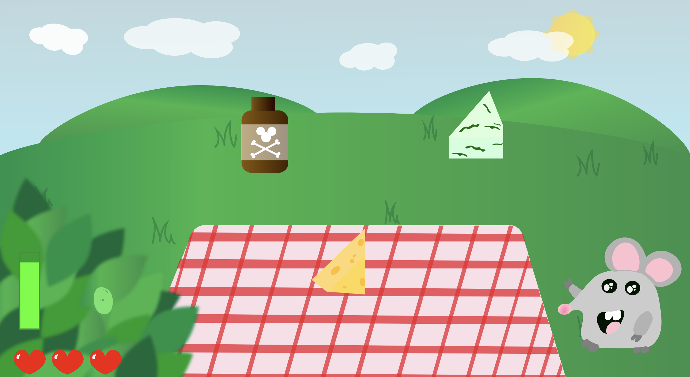

Tema 4 - Grundlæggende Animation
Aldrig har jeg skulle holde tungen så lige i munden 5 uger i streg!
I dette forløb lærte jeg, at lave et simpelt spil helt fra bunden. Det gjorde jeg med hjælp fra konceptudvikling, idégenerering, skitsering, storytelling, aktivitetsdiagrammer og stor koncentration. Efter en masse timer i XD og med javascript stod jeg tilbage med et færdigt spil.
